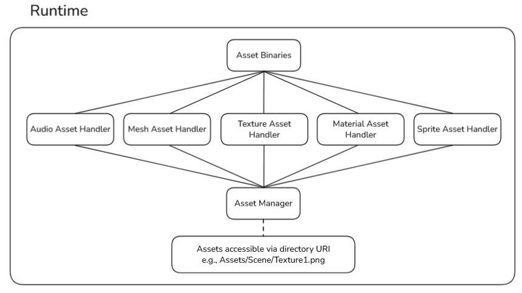
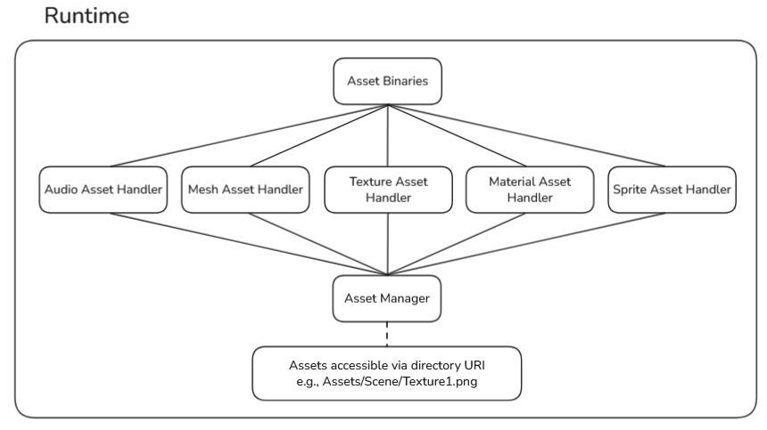

Toolchain Extension
Synopsis
-
Helped develop an automated asset build tool that processed source assets into runtime-ready chunkfiles.
-
Designed new
.assetdesc file types; files which would describe the asset type, relative source
path of the asset, asset import settings, and references to asset dependencies.
-
Used
std::filesystem to recursively scan a source assets directory for asset descriptor files,
generating .assetbin chunkfiles in a mirrored asset binaries directory.
-
Extended the toolchain in a flexible and scalable way where extensions to import settings could be easily
implemented by updating the asset descriptor build logic on the tool side.
-
Improved team workflow by making assets accessible immediately once submitted through perforce via an asset
manager which loaded specific asset manifests and made automatically them accessible via their directory URI.
Pipeline Diagram
 
